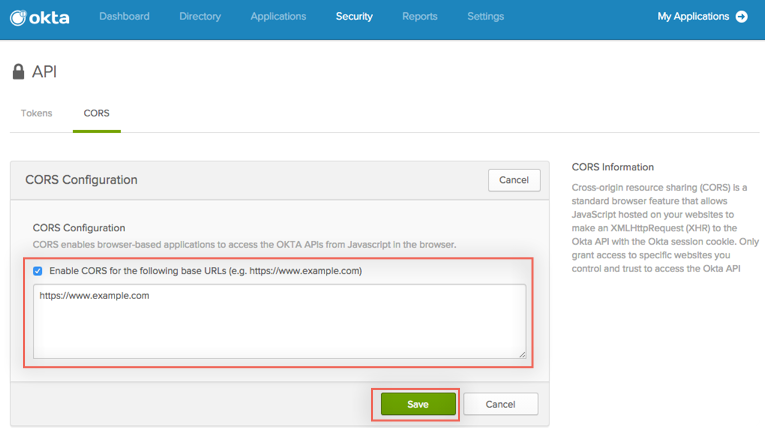

Before adding a new facebook app, CORS must be enabled for relying party URL as follows:
In Okta, select Security > API from the Admin dashboard.
Select the CORS tab.
Click the Edit button:

Ensure that the Enable CORS for the following base URLs box is checked and enter the following into the text box into the text area:
http://localhost:3000/{{baseURL}}Click Save button.
Navigate to [Facebook Developers] (http://developers.facebook.com). Note that you may be prompted to register if you have not previously used the Facebook Developer site.
Select Add a New Appfrom the My Apps menu.
In the Platform Selection screen, select Website.
When prompted, enter a descriptive name and select Create New Facebook App ID.
In the confirmation dialog, select a category, then click the Create New Facebook App ID button.
Once you have completed the Add New App wizard, Facebook generates a JavaScript snipit with instructions to add the code directly after the opening <body> tag.
<script>
window.fbAsyncInit = function() {
FB.init({
appId : '842870062470869',
xfbml : true,
version : 'v2.3'
});
};
(function(d, s, id){
var js, fjs = d.getElementsByTagName(s)[0];
if (d.getElementById(id)) {return;}
js = d.createElement(s); js.id = id;
js.src = "//connect.facebook.net/en_US/sdk.js";
fjs.parentNode.insertBefore(js, fjs);
}(document, 'script', 'facebook-jssdk'));
</script>
In a separate browser or window, in Okta, select Security > Identity Providers from the Admin dashboard.
Select Add Facebook from the drop down.
In the Name field, enter Log in with Facebook.
Using the drop-down menu, set the value of the Transform username field to email.
Now you will need to copy two values from your Facebook Developer App Settings page:
Copy the value of the Facebook App ID to the Client ID field on the Okta Identity Provider configuration page.
Copy the value of the Facebook App Secret to the Client Secret field on the Okta Identity Provider configuration page. Note that you need to click the Show button on the Facebook page to obtain the Client Secret.
Click the Add Identity Provider button.
You will be returned to the Okta "Identity Providers" page.
Copy the Login URL from the Okta Identity Providers page onto your clipboard.
On the Facebook Developer App Settings page, click the Add Platform button, then select Website from the pop-up.
Paste the Okta Identity Provider Login URL from your clipboard into the field labeled URL of your site.
The Okta URL you paste into the "URL for your site" field should look something like this: "https://example.okta.com/sso/authorize/0ab1c2de3fGHIjKLM4n5"
Click the Save Changes button.
In Okta, select Security > Identity Providers from the Admin dashboard.
Click the Add Identity Provider button, then select Facebook.